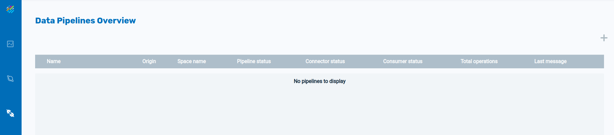
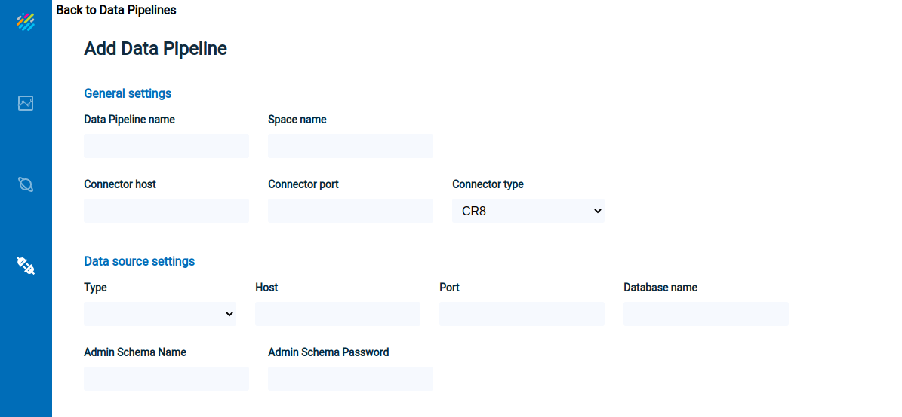
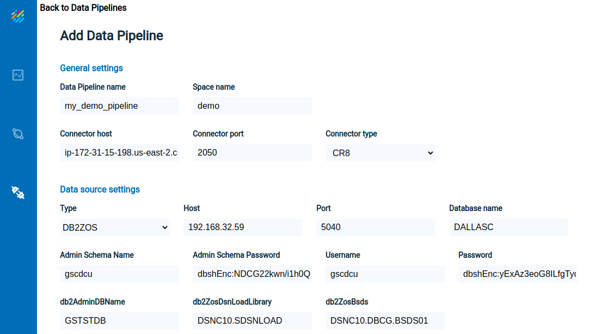
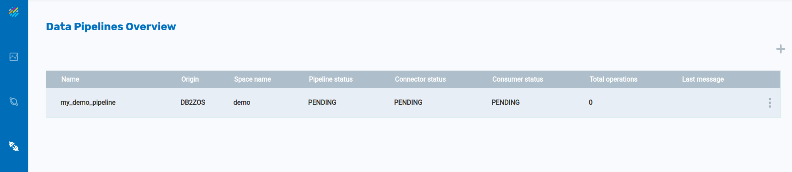
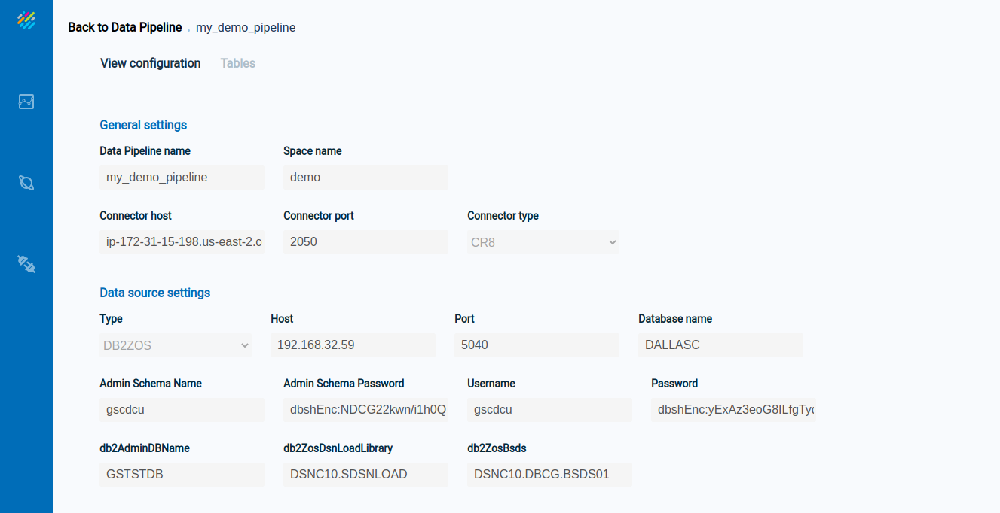
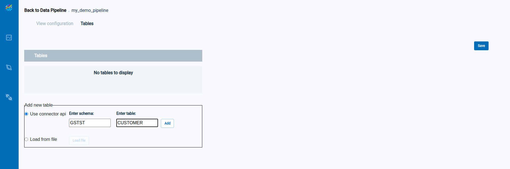
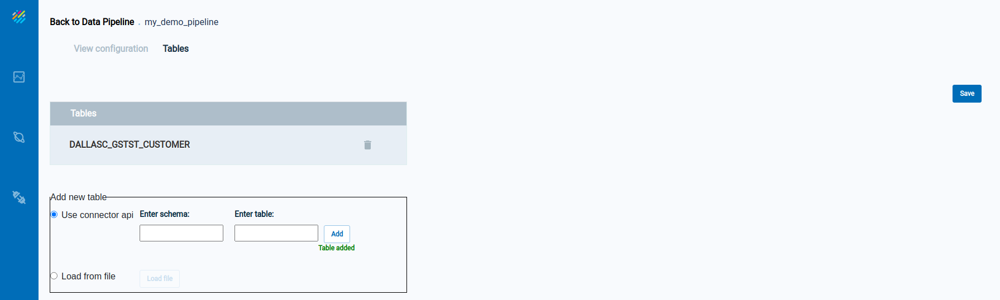
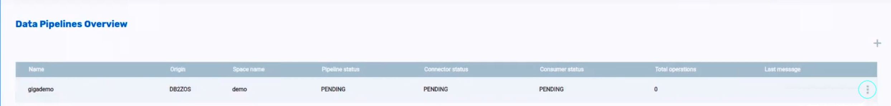
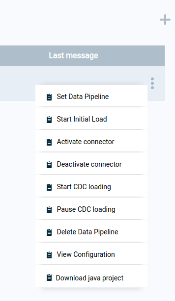

To begin the process of creating a Data Pipeline, click on the Data Pipelines icon in Ops Manager, and then click on the + icon:

The Add Data Pipeline screen will display:

Enter the required data, as shown below, and click on Validate Connection.

Upon entering valid data, the Data Pipelines Overview screen will appear:

Click anywhere on the line describing the Data Pipeline, and detailed configuration information will display, with two tabs: View configuration and Tables.
The View configuration tab appears as follows:

The Tables tab shows the list of tables in the Data Pipeline, which is initially empty. Enter information for a table on the bottom portion of the screen:

Click on Add to add a table to the Data Pipeline. The new table now appears in the list of tables near the top of the screen:

Click on the table name to see detailed information about the table:

Note that the three-dot menu now appears on the right side of the Data Pipelines Overview screen:

Press on the three-dot menu to see the operations available for the data pipeline:
